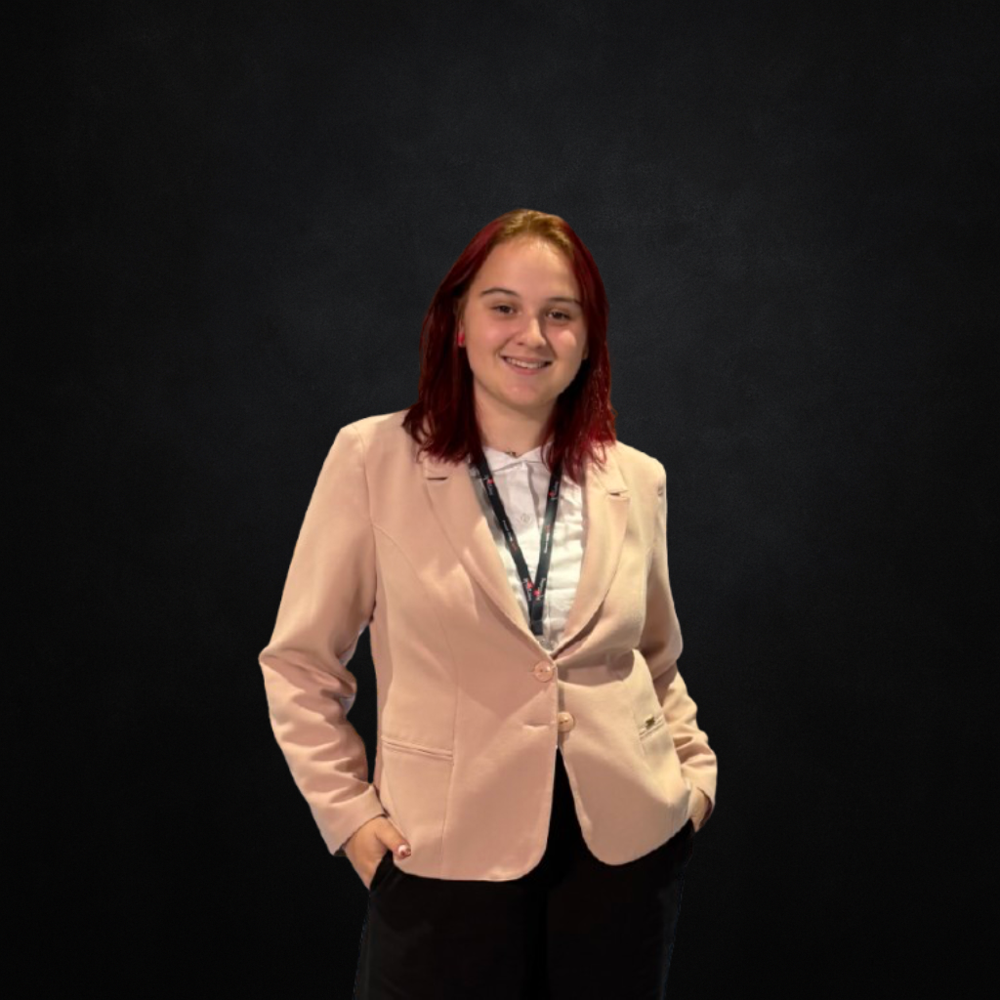

Barbora Nácovská

Ačkoliv studuji psychologii a management, duší jsem byla vždy kreativní. Láska ke kresbě a vizuálnímu umění mě postupně nasměrovala k UI designu. Mou vášní je navrhovat čistá, minimalistická i maximalistická a srozumitelná uživatelská rozhraní.
Miluji digitální umění ve všech jeho formách. Mým prvním krokem tímto směrem byla fotografie, kde mi výhry v několika soutěžích pomohly najít vlastní vizuální styl.